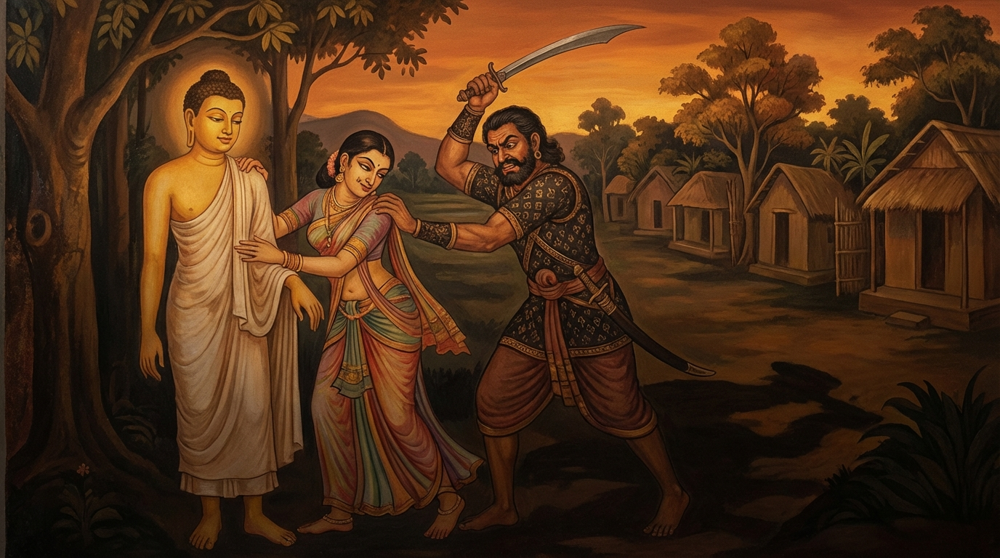

3. තක්ක ජාතකය (63)
“කොධනා අකතඤ්ඤූ චා” යනාදී මෙම ගාථාව ශාස්තෘන් වහන්සේ ජේතවනාරාමයෙහි වැඩ වාසය කරන සමයෙහි, (ශාසනය ගැන) කලකිරුණු භික්ෂුවක් අරභයා දේශනා කළ සේක. භාග්යවතුන් වහන්සේ “භික්ෂුව, ඔබ සැබවින්ම කලකිරී සිටින්නෙහි දැ”යි විමසා, “එසේය, ස්වාමීනි”යි කී කල්හි, “භික්ෂුව, ස්ත්රීහු නම් කෙළෙහි ගුණ නොදන්නෝය, මිතුරන්ට ද්රෝහී වන්නෝය. ඔවුන් නිසා ඔබ කුමට නම් කලකිරෙන්නෙහි ද?”යි වදාරා අතීත කතාව ගෙනහැර දැක්වූ සේක.
අතීතයෙහි බරණැස් නුවර බ්රහ්මදත්ත රජු රාජ්ය කරන සමයෙහි, බෝධිසත්වයෝ ඍෂි ප්රවෘජ්ජාවෙන් පැවිදි ව ගං ඉවුරෙහි ආශ්රමයක් තනාගෙන සමාපත්ති හා අභිඥා උපදවා ගෙන ධ්යාන සුවයෙන් වාසය කළහ. එකල බරණැස් සිටුහුගේ දියණිය ‘දුෂ්ට කුමාරි’ නම් වූවාය. ඇය ඉතා චණ්ඩ ය, පරුෂ ය. දාස කම්කරුවන්ට බැණ වදියි, තර්ජනය කරයි, පහර දෙයි. ඉක්බිති එක් දිනක් පිරිවර ජනයා ඇය රැගෙන “ගඟෙහි දිය කෙළිමු”යි ගියහ. ඔවුන් දිය කෙළිද්දී ම හිරු බැස යන වේලාව පැමිණියේය. මහා මේඝයක් නැගී ආවේය. මිනිස්සු වැහි වලාකුළු දැක ඔබමොබ වේගයෙන් පලා ගියහ. සිටු දියණියගේ දාස කම්කරුවෝ ද “අද අපට මැයගේ පිටුපස දැකීම (මැයගෙන් බේරී යාම) වටී”යි සිතා, ඇය ජලය තුළ සිටියදී ම අතහැර ගොඩට ආහ. මහ වැසි වැස්සේය. සූර්යයා ද අස්තංගත විය. අන්ධකාරය පැතිර ගියේය. ඔවුහු ඇය නොමැතිව ම ගෙදර ගොස්, “ඇය කොහි දැ”යි (දෙමව්පියන්) විමසූ කල්හි, “ගඟින් ගොඩට ආවාය, ඉන්පසු ඇය ගිය තැනක් අපි නොදනිමු”යි පැවසූහ. ඥාතීහු සොයා බැලුව ද ඇය නුදුටුවහ.
ඒ සිටු දියණිය මහත් සේ විලාප දෙමින්, ජල පහරට ගසාගෙන යන්නේ මධ්යම රාත්රියෙහි බෝධිසත්වයන්ගේ පන්සල අසලට පැමිණියාය. උන්වහන්සේ ඇගේ ශබ්දය අසා, “මේ ස්ත්රියකගේ හඬකි, ඇයට ආරක්ෂාව සැලසිය යුතුය”යි සිතා, තණ හුලක් ගෙන ගං ඉවුරට ගොස් ඇය දැක, “බිය නොවන්න, බිය නොවන්න”යි අස්වසා, ඇතුන් වැනි කාය බල ඇති ශක්තිසම්පන්න බෝධිසත්වයෝ ගඟට බැස පීනා ගොස් ඇය ඔසවාගෙන තම ආශ්රමයට ගෙනැවිත් ගිනි දල්වා (උණුසුම) දුන්හ. සීතල පහ වූ කල්හි මිහිරි ඵලාඵල දුන්හ. ඒවා අනුභව කොට සිටි ඇයගෙන්, “ඔබ කොහි වසන්නියක් ද? කෙසේ නම් ගඟට වැටුණේ ද?”යි විමසූහ. ඇය ඒ පුවත දැන්වූවාය. ඉක්බිති තාපසතුමා “ඔබ මෙහි ම වසන්න”යි ඇය පන්සලෙහි රඳවා, දෙතුන් දිනක් තමන් වහන්සේ එළිමහනෙහි විසූහ. පසුව “දැන් ඔබට යා හැකිය”යි කීහ. එවිට ඇය “මම මේ තාපසයා සිල් බිඳවා, ඔහු රැගෙන ම යන්නෙමි”යි සිතා නො ගියාය. ඉක්බිති කල් ගතවෙද්දී ස්ත්රී මායම් හා ලීලාවන් පා, ඔහුගේ ශීලය බිඳවා ධ්යානයන් අතුරුදහන් කරවූවාය. හෙතෙම ඇය භාරගෙන වනයෙහි ම වාසය කළේය. පසුව ඇය, “හිමියනි, අපට වනවාසයෙන් කවර නම් ඵලක් ද? මිනිස් වාසයට යමු”යි කීවාය. ඔහු ඇය රැගෙන එක්තරා කුඩා පසල් ගමකට ගොස් මෝරු ආදිය විකුණා ජීවිකාව ගෙන යමින් ඇය පෝෂණය කළේය. මෝරු (තක්ක) විකුණා ජීවත් වන නිසා මිනිස්සු ඔහුට “තක්කපණ්ඩිත” යයි නම තැබූහ. පසුව ගම්වාසීහු ඔහුට වියදම් දී, “අපගේ යුතු අයුතුකම් (නැකැත් ආදිය) කියමින් මෙහි ම වසන්න”යි කියා ගම් දොරටුව අසල කුටියක් තනා එහි නැවැත්වූහ.
එසමයෙහි සොරු පිරිසක් පර්වතයෙන් බැස අවුත් පසල් දනව්වලට පහර දෙති. ඔවුහු එක් දිනක් ඒ ගමට පහර දී ගම්වාසීන් ලවා ම බඩු පොදි ඔසවාගෙන යන්නාහු, ඒ සිටු දියණිය ද අල්ලාගෙන තමන් වසන තැනට ගොස් සෙසු ජනයා නිදහස් කළහ. සොරුන්ගේ නායකයා ඇගේ රූපයට වශී වී ඇය තමාගේ භාර්යාව කර ගත්තේය. බෝධිසත්වයෝ “මෙනම් තැනැත්තිය කොහි දැ”යි විමසූහ. “සොර දෙටුවා විසින් ඇය ගෙන ගොස් තමාගේ බිරිඳ කරගන්නා ලදී”යි අසන්නට ලැබුණ ද, “ඕ මා හැර දමා එහි නො වසන්නීය, පලා ගොස් නැවත එන්නීය”යි සිතා ඇගේ පැමිණීම බලාපොරොත්තුවෙන් එහි ම විසූහ.
සිටු දියණිය ද මෙසේ සිතුවාය: “මම මෙහි සැප සේ වසමි. යම් හෙයකින් තක්කපණ්ඩිත යම් කරුණක් නිසා මෙහි පැමිණ මා මෙතැනින් රැගෙන යන්නේ නම්, මම මේ සැපයෙන් පිරිහෙන්නෙමි. එබැවින් මම ආදරයක් ඇති විලසින් ඔහු මෙහි ගෙන්වාගෙන මරවන්නෙමි.” ඕ තොමෝ එක් මිනිසකු කැඳවා, “මම මෙහි ඉතා දුකින් ජීවත් වෙමි; තක්කපණ්ඩිත තුමා පැමිණ මා රැගෙන යේවා”යි හසුනක් යැව්වාය. හෙතෙම ඒ පණිවිඩය අසා, එය සත්ය යැයි සිතා එහි ගොස් ගම් දොරටුව අසල සිට පණිවිඩයක් යැවීය. ඇය පිටතට පැමිණ ඔහු දැක, “හිමියනි, අපි දැන් ම ගියහොත් සොර දෙටුවා ලුහුබැඳ අවුත් අප දෙදෙනා ම මරනු ඇත; එබැවින් රාත්රී කාලයේ යමු”යි ඔහු ගෙතුළට කැඳවා කවා පොවා කාමරයක රඳවා තැබුවාය. සවස් කාලයේ සොර දෙටුවා පැමිණ සුරා පානය කොට මත් වූ කල්හි, “ස්වාමීනි, ඉදින් මේ වේලාවෙහි ඔබගේ සතුරකු දකින්නේ නම් ඔහුට කුමක් කරන්නෙහි දැ”යි ඇසුවාය. “මේ මේ දේ කරමි”යි ඔහු කී කල්හි, “ඒ සතුරා දුර නොව, මේ කාමරයෙහි ම හිඳින්නේය”යි කීවාය. සොර දෙටුවා ගිනි හුලක් ගෙන එහි ගොස් ඔහු දැක, අල්ලාගෙන ගේ මැදට ඇද දමා වැලමිට ආදියෙන් කැමති පරිදි තැලුවේය. ඔහු එසේ ගුටි කද්දීත් වෙන කිසිවක් නො කියා, “ස්ත්රීහු ක්රෝධ කරන්නෝය, කෙළෙහි ගුණ නොදන්නෝය, කේලාම් කියන්නෝය, මිතුරන් භේද කරන්නෝය (මිත්රද්රෝහීහුය)” යන මේ වචන පමණක් කියයි. සොරා ඔහුට තළා පෙළා බැඳ දමා රාත්රී භෝජනය අනුභව කොට නිදා ගත්තේය. පිබිදුණු ඔහු සුරා මදය හිඳුණු පසු නැවතත් ඔහුට තළන්නට පටන් ගත්තේය. එවිට ද පණ්ඩිතයෝ ඒ පද හතර ම කියති.
සොරා මෙසේ සිතුවේය: “මේ තැනැත්තා මෙතරම් තළනු ලැබුව ද අන් කිසිවක් නො කියා මේ පද හතර ම කියයි. මොහුගෙන් ඊට හේතු විමසන්නෙමි.” ඇය නිදා සිටින බව දැන ඔහුගෙන් ප්රශ්න කළේය: “පින්වත, ඔබ මෙසේ පහර දෙනු ලබද්දීත් කුමක් හෙයින් මේ පද ම කියන්නෙහි ද?” තක්කපණ්ඩිතයෝ “එසේ නම් අසන්න”යි මුල සිට සියලු විස්තර කීහ. “මම පෙර වනයෙහි විසූ ධ්යානලාභී තාපසයෙක්මි. ගඟේ ගසාගෙන ගිය මැය ගොඩට ගෙන පෝෂණය කළෙමි. පසුව මැය මා පොළඹවා ධ්යානයෙන් පිරිහෙළුවාය. ඒ මම වනය අතහැර මැය පෝෂණය කරමින් පසල් ගමක වසමි. ඉක්බිති සොරුන් විසින් මැය මෙහි ගෙනෙන ලදී. එවිට ‘මා දුකසේ වසමි, අවුත් මා රැගෙන යන්න’ යයි මට පණිවිඩයක් එවා, (මා ගෙන්වාගෙන) දැන් ඔබ අතට පත් කළාය. මේ කරුණ නිසා මම මෙසේ කියමි.” සොරා සිතුවේය: “මෙබඳු ගුණසම්පන්න, උපකාර කළ කෙනෙකුටත් යම් ස්ත්රියක් මෙසේ විරුද්ධ ව පිළිපැද්දා නම්, ඇය මට කවර නම් විපතක් නො කරන්නී ද? මැය මරා දැමිය යුතුය.” හෙතෙම තක්කපණ්ඩිතයන් අස්වසා ඔහු අවදි කරවා, කඩුව ගෙන නික්ම, “මේ මිනිසා ගම් දොරටුව අසල දී මරන්නෙමි”යි (ඇයට ඇසෙන්නට) කියා ඇය ද සමඟ ගමින් පිටතට ගොස්, “මොහු අතින් අල්ලා ගන්න”යි ඇය ලවා ඔහු අල්ලවා ගෙන, කඩුව ගෙන තක්කපණ්ඩිතයන්ට පහර දෙන්නාක් මෙන් (ක්රියා කර), ඇය දෙපළු කොට දැමුවේය. පසුව පණ්ඩිතයන්ගේ හිස නාවා, කීප දිනක් ප්රණීත ආහාරයෙන් සංග්රහ කොට, “දැන් කොහි යන්නෙහි දැ”යි ඇසුවේය. තක්කපණ්ඩිතයෝ, “ගිහිගෙයි විසීමෙන් මට කම් නැත. තවුස් පැවිද්දෙන් පැවිදි ව ඒ වනයෙහි ම වසන්නෙමි”යි කීහ. “එසේ නම් මම ද පැවිදි වන්නෙමි”යි කියා දෙදෙනා ම පැවිදි වී, ඒ වනයට ගොස් පඤ්ච අභිඥා හා අට සමාපත්ති උපදවා ගෙන ජීවිත අවසානයෙහි බ්රහ්මලෝකයෙහි උපන්හ.

ශාස්තෘන් වහන්සේ මේ කථා වස්තු දෙක වදාරා, පූර්වාපර සන්ධි ගළපා, අභිසම්බුද්ධ වී (බුදු ඇසින් බලා) මේ ගාථාව වදාළ සේක.
“ස්ත්රීහු නම් කිපෙන සුළු ය, කළ ගුණ නො දන්නෝ ය, කේලාම් කියන්නෝ ය, මිතුරන් භේද කරවන්නෝ ය. එබැවින් මහණ, බ්රහ්මචර්යාවෙහි හැසිරෙව. එවිට තෝ (එම) සුවයෙන් නො පිරිහෙන්නෙහිය.”
මෙහි අර්ථය මෙසේ ය: මහණ, මේ ස්ත්රීහු නම් “කොධනා” ය, එනම් උපන් ක්රෝධය වළක්වා ගැනීමට නොහැකි අය ය. “අකතඤ්ඤූ ච” ය, ඉතා මහත් උපකාරයක් කළ ද ඒ බව නො දනිති. “පිසුණා ච” ය, ප්රිය බව නැති කරන්නා වූ (බිඳවන්නා වූ) කථා කියති. “මිත්තභෙදිකා” ය, මිතුරන් බිඳවති; මිතුරන් භේද කරවන කථා කියන ස්වභාව ඇත්තෝය. මෙබඳු වූ පාප ධර්මයන්ගෙන් මොවුහු යුක්ත ය. මොවුන්ගෙන් ඔබට ඇති ඵලය කුමක් ද? “බ්රහ්මචරියං චර භික්ඛු” - මහණ, මෛථුනයෙන් වෙන් වීම යනු පිරිසිදු අර්ථයෙන් බ්රහ්මචර්යාව නම් වේ. එහි හැසිරෙන්න. “සො සුඛං න විහාහිසී” - ඒ නුඹ මෙසේ බ්රහ්මචර්යාවෙහි වසන්නේ, ධ්යාන සුවය ද, මාර්ග සුවය ද, ඵල සුවය ද අත් නො හරින්නෙහිය; ඒ සුවයෙන් නො පිරිහෙන්නෙහිය.
ශාස්තෘන් වහන්සේ මේ ධර්ම දේශනාව ගෙනහැර දක්වා චතුරාර්ය සත්යය ප්රකාශ කළ සේක. සත්ය දේශනාව අවසානයෙහි කලකිරුණු භික්ෂුව සෝවාන් ඵලයෙහි පිහිටියේය. ශාස්තෘන් වහන්සේ ජාතකය නිමවා වදාළ සේක. “එකල සොර දෙටුවා වූයේ ආනන්ද තෙරණුවෝ ය. තක්කපණ්ඩිතයා වූයේ මම ම වෙමි.”
තුන්වෙනි වූ තක්කපණ්ඩිත ජාතක වර්ණනාව යි.